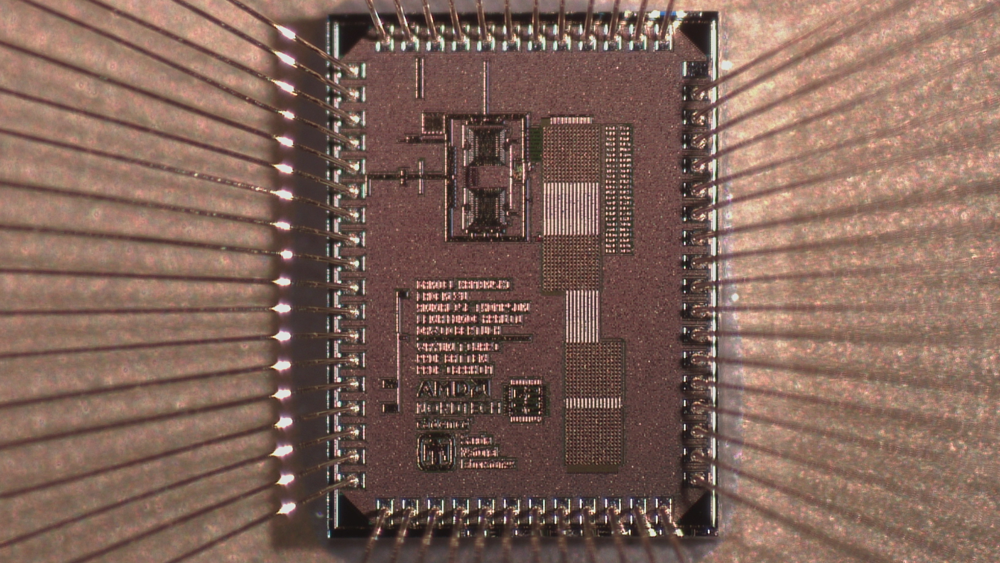
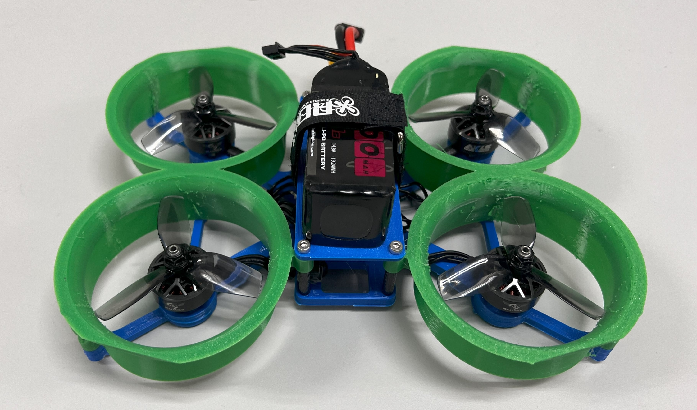
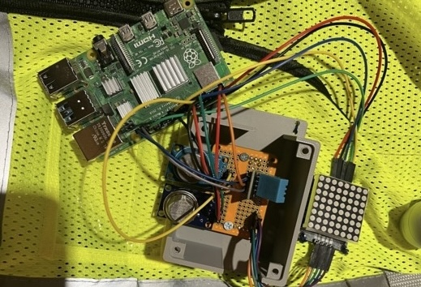
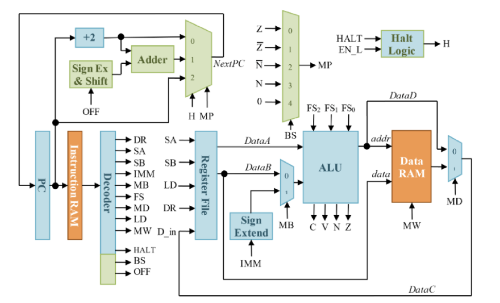

8-bit Differential SAR ADC
Contributed to the tapeout of a fully custom 4.44 MS/s 8-bit differential SAR ADC in TSMC 180 nm as part of Cornell’s Custom Silicon Systems (C2S2) Analog team.
I’m an electrical and computer engineering student at Cornell University with an interest in hardware from PCBs to silicon.
Previously, I interned at Amazon, where I built scalable cloud analytics pipelines and improved cross-region monitoring infrastructure, gaining experience in building systems at scale. This summer, I’ll be joining GlobalFoundries to work on ultra-low-power CMOS eNVM and analog design for memory, where I’ll be learning more about how chips work at device-level.
Email / GitHub / LinkedIn / X / Personal Corner

Contributed to the tapeout of a fully custom 4.44 MS/s 8-bit differential SAR ADC in TSMC 180 nm as part of Cornell’s Custom Silicon Systems (C2S2) Analog team.

Built a custom quadcopter and developed supporting course materials for a hands-on MAE drone-building class, introducing students to flight systems, controls, and embedded hardware.


Designed a single-cycle microprocessor in Verilog for ECE2300, implementing the ALU, decoder, register file, program counter, and branch logic. Built in Quartus, tested in ModelSim, and validated on a Cyclone V FPGA.